GEOG*2420
The Earth From Space
Image Resolution
John Lindsay
Fall 2015
Readings
Jensen Chapter 1 pg. 14-20
Resolution
- Resolution is the smallest interval measurable by a scientific instrument.
- We're referring to the resolving power of the imagining device.
- It's related to the level of detail in the image and therefore the information content.
Types of Resolution
- Spectral
- Radiometric
- Spatial
- Temporal
- Polarization
Spectral Resolution
- The number and size of spectral regions the imaging device records data in
- For example, a particular sensor may have multiple 'bands' that record within the
blue, green, red, near-infrared, and thermal infrared parts of the spectrum.
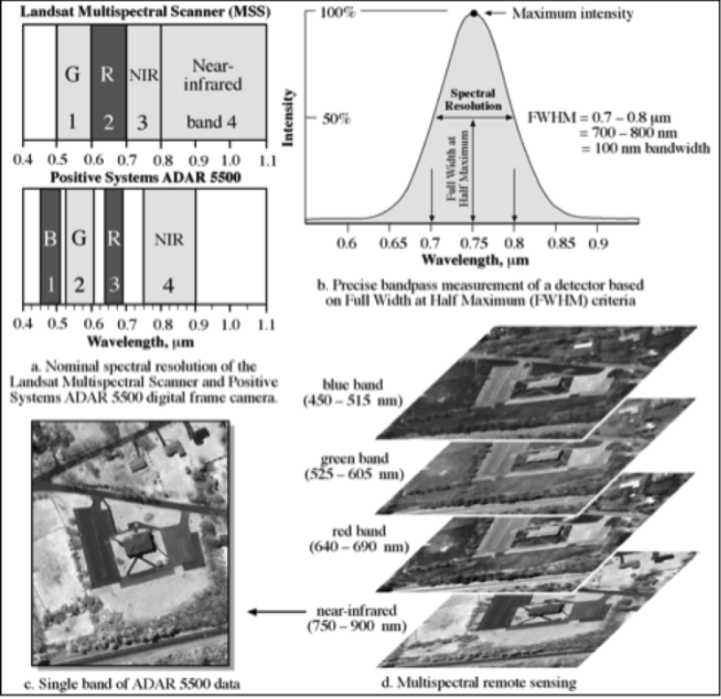
(source: Jensen, 2006)
Spectral Resolution
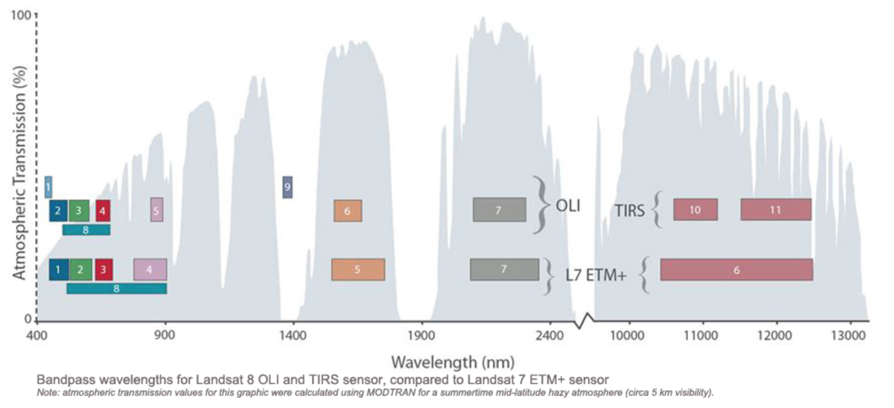
(source: USGS, 2015)
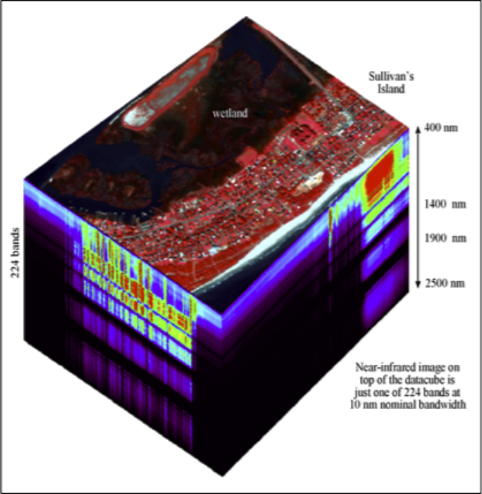
Airborne Visible Infrared
Imaging Spectrometer (AVIRIS)
data cube of Sullivan's Island
obtained on October 26, 1998
Radiometric Resolution
- The sensitivity of detectors to small differences in electromagnetic energy.
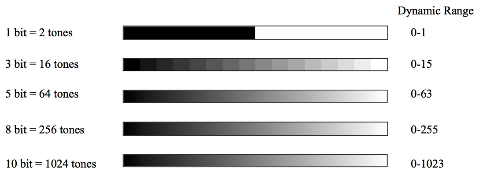
(source: Lindsay, 2013)
Spatial Resolution
- Related to the smallest distinguishable ground feature in the image, i.e. the detail.
- Influenced mainly by image scale.
- Limited by the size and number of silver halide crystals in film cameras and by
the number of charge-coupled device (CCD) detectors for digital cameras
- Can be improved using a telephoto lens.
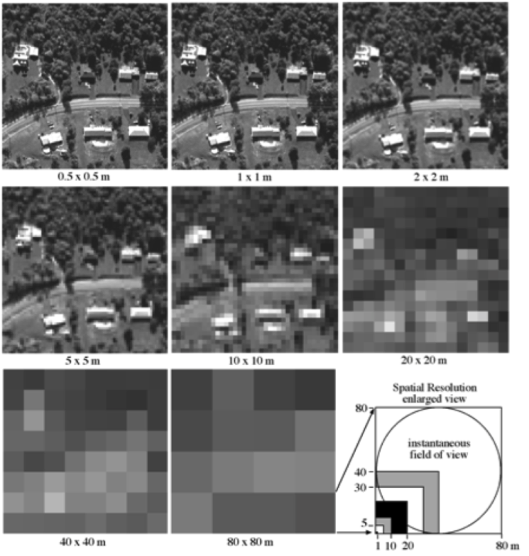
(source: Jensen, 2006)
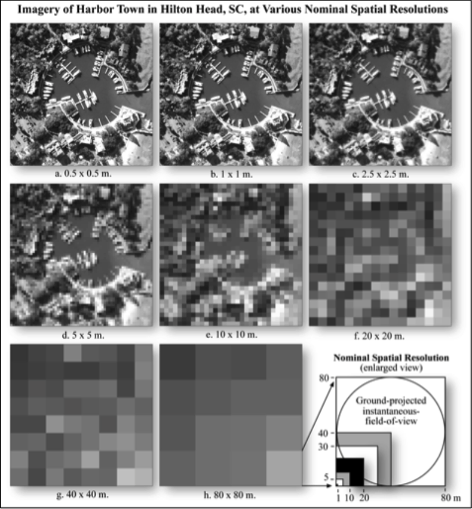
(source: Jensen, 2006)
Spatial Resolution
- A compromise exists between the spectral resolution and the spatial resolution.
- Panchromatic bands are usually finer spatial resolution
than multispectral bands.
- This can be achieved because of the relatively coarse spectral resolution of pan images.
The Resolution Compromise
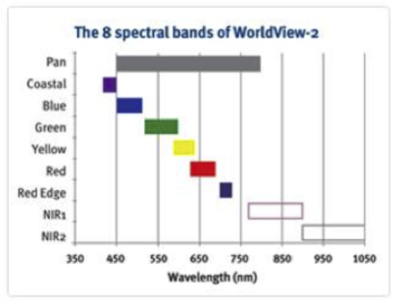
(source: DigitalGlobe)
- 0.46 m pan (resampled to 0.5 m); 1.8 m MS bands
- 11-bit spectral res (2048 grey tones)
Temporal Resolution
- How often the sensor acquires data, e.g. every 30 days.
- Temporal resolution is partly determined by orbital characteristics.
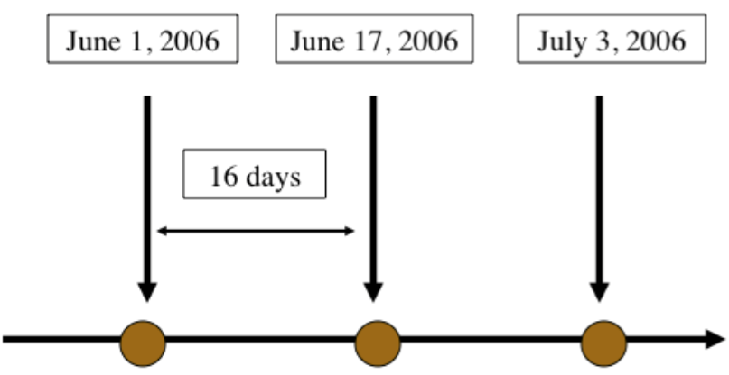
(source: Unknown)
Spatial and Temporal Resolution Considerations
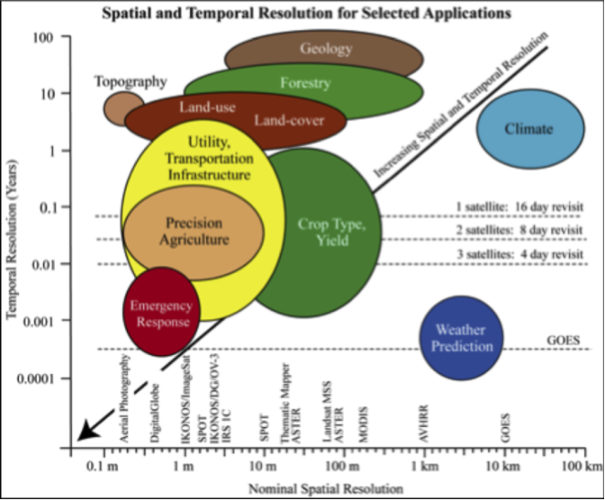
(source: Jensen, 2006)
Polarization
- Unpolarized energy vibrates in all possible directions perpendicular to the
direction of travel.
- Radar systems can detect polarized EMR.
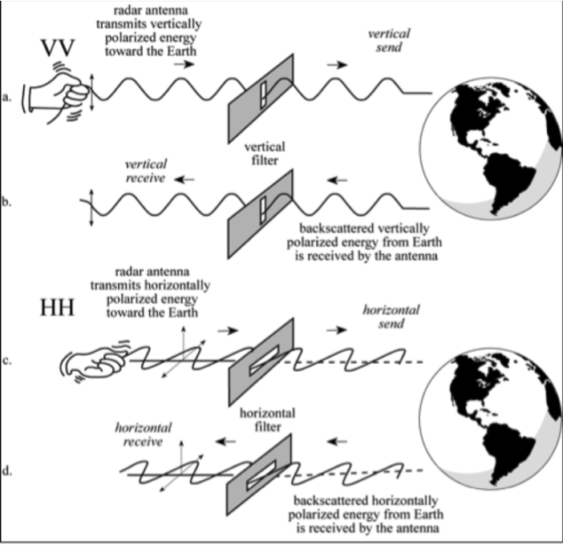
(source: Jensen, 2006)
Polarization
- HH and VV configurations produce like-polarized radar imagery.
- HV and VH configurations produce cross-polarized imagery.
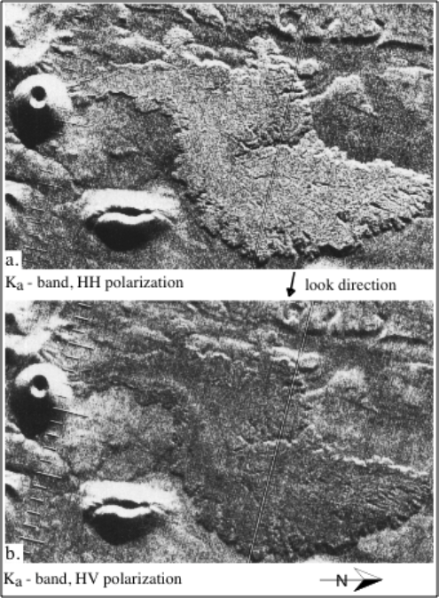
(source: Jensen, 2006)